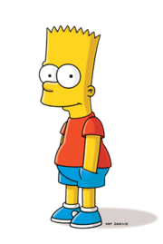

Бартолом'ю ДжоДжо «Барт» Сімпсон (англ. Bartholomew JoJo «Bart» Simpson) — один із головних героїв мультиплікаційного серіалу Сімпсони. Барт — найстарша дитина Гомера і Мардж Сімпсон. У нього також є дві молодші сестри — Ліса і Меґґі. Барт є втіленням образу бешкетника та посереднього учня у школі. Разом зі своїм батьком Барт є одним із найвідоміших персонажів у цьому серіалі.
Вік Барта — 10 років, а в одній із серій на запитання Гомера він відповідає, що його день народження — 23 лютого.
Найвизначніші риси характеру Барта: непослух, бешкетництво, бунтарство, неповага до авторитетів, дотепність,саркастичність.
Протягом перших двох сезонів Барт виступав головним героєм серіалу; пізніше увагу більше сфокусували на Гомері. Втім, Барт залишається одним із найголовніших персонажів в історії телевізійної мультиплікації США.

Барт є представником психологічного типу людини, яка не реалізує своїх здібностей (англ. underachiever). Неслухняність і нехтування правилами — його типові моделі поведінки. Його пустощі та хуліганські витівки часто є складними та продуманими, а дії та мовлення часто характеризують його як хлопчика з гострим і гнучким розумом. Події серій «Канікули нарізно» і «Братиків маленький помічник» розкривають, що Барт страждає на синдром дефіциту уваги. В серії «Джазмени та кицьки» з'ясовується неабияка музична обдарованість Барта — він стає чудовим барабанщиком. З іншого боку, Барт нерідко виявляє нездатність розуміти прості речі такі як значення слова «іронія», поняття екватор і те, що наліпка фірми-виробника на глобусі не є назвою однієї з країн. У манері поведінки Барта є багато спільного з Гомером (зокрема, сам батько називає його «маленькою зухвалою версією себе самого»).
Незважаючи на загалом погану й егоїстичну вдачу, Бартові нерідко властиві прояви справжніх чеснот. Він неодноразово допомагає влаштувати особисте життя директора школи Скіннера і своєї вчительки міс Крабапель (хоча й завжди тероризує директора через його бюрократичний характер, з Едною в нього набагато тепліші відносини, через схожість характерів, що неодноразово було помітно у деяких епізодах), дружить з аутсайдером Мілгаусом. У серії «Маленький Віґґі» Барт навіть жертвує власною популярністю, захищаючи Ральфа Віґґама.
Неслухняність Барта і батьківська недбалість Гомера є причиною досить безладних стосунків між ними. Барт часто звертається до Гомера по імені (замість «батьку», «тату»), тоді як сам Гомер часто називає його «хлопець». Коли з'ясовується, що Барт вчинив щось погане чи безглузде, Гомер хапає його за горло з криком «Ах ти ж… !», дає йому потиличника чи грізно вигукує: «БАРТЕ!». У повнометражному фільмі стосунки Гомера з Бартом остаточно псуються, що виливається у бартову репліку: «Краще б моїм батьком був не ти, а Фландерс!» Утім, незважаючи ні на що, між ним і Гомером направду існує почуття щирої батьківсько-синівської любові. Зі свого боку Мардж, яка називає Барта «своїм особливим хлопчиком», виявляє до нього більше уваги, розуміння і дбайливості, хоч і не залишає непоміченими його витівки.
Бартові стосунки з Лісою здебільшого мають характер суперництва. Він часто ображає її під впливом ревнощів, інколи вони навіть фізично б'ються. Проте Барт завжди розуміє і вибачається, якщо заходить надто далеко, визнає, що Ліса інтелектуально його перевершує, нерідко звертається по її поради, здатний захистити її від інших.
Серед інтересів Барта — телешоу клоуна Красті, катання на скейтборді, читання коміксів, відеоігри та жарти й розіграші (наприклад, хуліганські телефонні дзвінки у таверну Мо). У серії «Генерал Барт» він називає своїми улюбленими фільмами «Щелепи» та «Зоряні війни». Його найкращий друг — Мілгаус ван Гутен. Барт має надзвичайні здібності до вивчення мов: він опанував французьку, живучи у Франції за програмою обміну (в серії «Млинці гніву»), іспанську — за кілька годин, готуючись до подорожі у Бразилію (і намагався забути її, дізнавшись що основною мовою спілкування у Бразилії є португальська), японською — також за кілька годин, перебуваючи з батьком у в'язниці в Японії; у серії «Зірка Бернс» Барт виявляє знання китайської та латини. Такі феноменальні лінгвістичні здібності Барта є, ймовірно, успадкованими від батька, який також легко засвоює мови. Барт вміє керувати автомобілем і навіть має водійські права (так його винагородили за порятунок Спринґфілда від пожежі).
Автор книги «Планета Сімпсонів» Кріс Тернер називає Барта нігілістом. Бунтівні риси характеру і неповага до авторитетів, на його думку, пов'язує його з такими «іконічними» персонажами американської культури як Том Соєр і Гекльберрі Фінн.